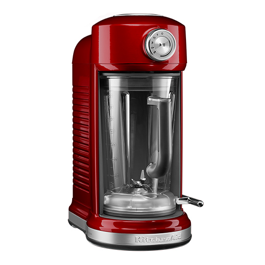

Блендер BORK B802 VS KitchenAid 5KSB5080
Современная техника отличается от ретро тем, что экономит самое ценное на сегодняшний день – время. Ретро дизайн - это на любителя, а вот ретро технологии это вчерашний, а быть может и позавчерашний день.
KitchenAid 5KSB5080
Преимущества KitchenAid, которые пытаются продать:
- Дизайн и выбор цветов
- Страна производства США
- Срок гарантии 7 лет
- Международная компания существует с 1919 года
- KitchenAid переводится как кухонный помощник
-
Магнитный привод ножей блендера исключает износ контактного соединения
Примечание: магнитный привод ножей существенно повышает уровень шума блендера
Характеристики KitchenAid:
- Потребляемая мощность: 1300 Вт
- Объём чаши: 1,75 л
- Вес: 10 кг
- Плавная регулировка скоростей
- 4 автоматических режима
- Ножи несъёмные, количество лезвий: 4 шт
- Скорость вращения насадки: 700 – 20000 об/мин
- Тип управления шатл
- Материал чаши пластик не содержит BPA
Преимущества блендера BORK B802:
- Информативный дисплей, функция таймера с прямым и обратным отсчётом, съёмный шатл с магнитным креплением и режим самоочистки обеспечивают лёгкость и комфорт при использовании блендера.
- Уникальная функция приготовления горячего супа (нагрев до 60⁰) открывает новые горизонты для использования блендера. Самый быстрый полезный и питательный суп за 6 мин
- Система измельчения ProKinetix это совокупность формы чаши и геометрии ножей, обеспечивающая быстрое равномерное измельчение продуктов
- Возможность приготовления муки из различных круп и зерна без перегрева ингредиентов
- Усовершенствованная конструкция крышки даёт возможность измельчения горячих продуктов (до 1200 мл)
- 5 автоматических программ со специально разработанными алгоритмами позволяют достичь идеального результата, сохранив всю пользу продуктов.
- Режим FROZEN DESSERT в сочетании с толкателем идеально подходит для приготовления замороженных десертов сорбетов
- За счёт более высокой мощности блендер BORK идеально справляется с плотными и вязкими текстурами
- Скорость 32000 об минуту обеспечивают тонкую, однородную текстуру обрабатываемых ингредиентов
- Металлический привод обеспечивает надёжность блендера
- Реальная цена отличного продукта
Покупая KitchenAid, вы покупаете не только ретро дизайн, но и ретро технологии.